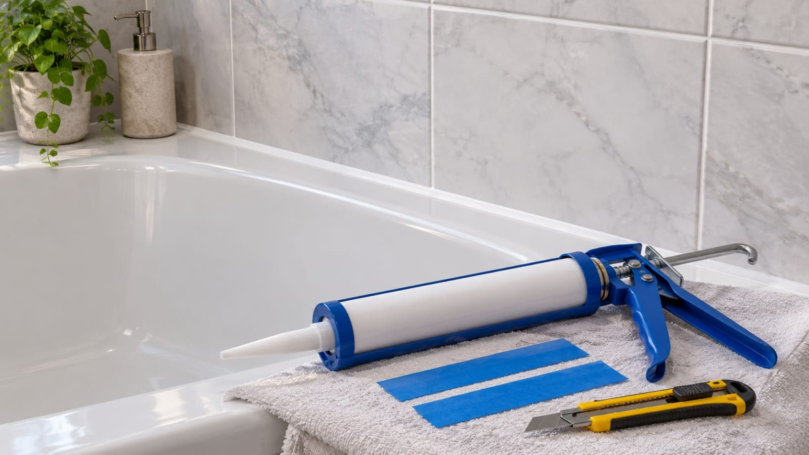
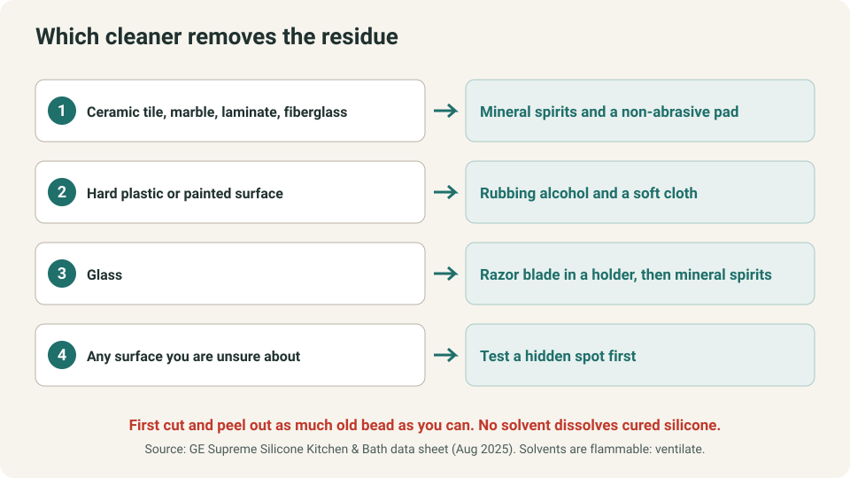
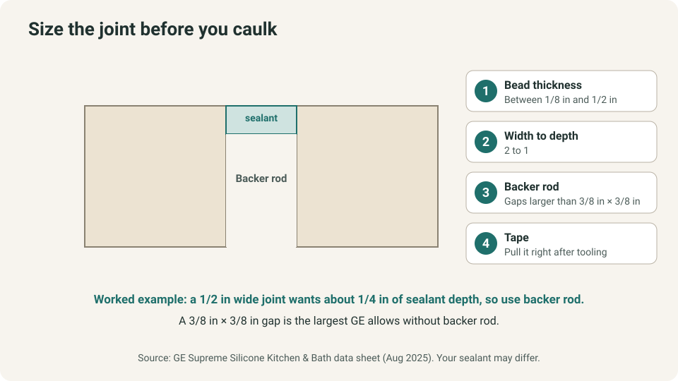
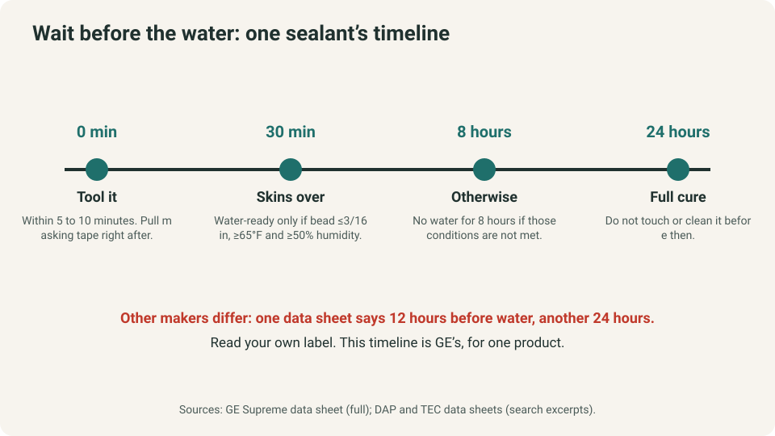

WEEKEND PROJECTS · BATHROOM REPAIR
How to Replace Bathtub and Shower Caulk (Remove, Prep, Seal)

Bathroom caulk fails when moisture gets behind it, when it is applied over soap film or mold, or when the joint moves. This guide follows one maker’s full data sheet for removal, prep, joint size and cure, and EPA’s mold guidance, and shows where other sealant makers differ. It covers 100% silicone sealant only.
The quick answer
- Fix the moisture first. EPA says the key to mold control is moisture control, and not to paint or caulk moldy surfaces.
- Remove all the old sealant. The maker’s sheet says old sealants, soap residue and dirt must be removed, and that no substance dissolves cured silicone.
- Dry the joint, then size it. Backer rod for gaps over 3/8 inch, and a bead between 1/8 and 1/2 inch with a 2 to 1 width-to-depth ratio.
- Wait as the label says. Water-ready times run from 30 minutes under strict conditions to 24 hours for different products.
Quick plan
| Item | Detail |
|---|---|
| Time | An hour or two for removal, prep and application, then a full cure, 24 hours for the sealant we opened |
| Materials | 100% silicone kitchen and bath sealant, caulking gun, mineral spirits or rubbing alcohol, masking tape, gloves, safety glasses |
| Best for | A failed bead on sound, dry tub, tile or shower surfaces |
| Stop if | Mold covers a large area, the wall or tile is soft or moving, or the joint stays damp |
Step 1: Find out why the bead failed
A stained bead may only need cleaning. A split or detached one needs inspection. Look for loose tile, soft drywall, swollen trim and stains outside the tub. EPA says that if mold is a problem you should clean it up promptly and fix the water problem, and that if there has been a lot of water damage or mold growth covers more than 10 square feet you should consult its mold remediation guide.
Our precaution: if the wall is soft or damp, or water appears when the fixture is not in use, a new bead will hide the problem, not fix it. Stop and have it assessed. Our guides on reducing bathroom condensation and where to put water leak sensors cover moisture sources.
Step 2: Choose the sealant for your surfaces
The sheet we opened is for GE Supreme Silicone Kitchen & Bath, a 100% silicone sealant that is not paintable. It lists use on ceramic and porcelain tile, fiberglass, cultured marble, granite and natural stone, with a note to test metal, concrete and natural stone surfaces for blemishing. It also lists what it should not be used for.
- In continuous contact with water, such as underwater.
- Under shower door tracks.
- Where the sealant must be painted.
- On frozen or contaminated surfaces, or on excessively basic or acidic substrates.
Other makers differ, even on stone. One Henkel sheet for a UK sealant says to use a special natural stone silicone, another from the same maker says it is suitable for natural stone. Read the label for your product, and test a hidden spot.
Step 3: Remove the old bead without damaging the surface

- Cut and peel out as much of the old bead as you can with a sharp tool. The sheet says to cut or scrape cured sealant away with a sharp-edged tool.
- Remove what is left. For ceramic tile, marble, laminate and fiberglass, use 100 percent mineral spirits and a non-abrasive scouring pad. For hard plastics or painted surfaces, use rubbing alcohol and a soft cloth, not mineral spirits.
- Test any solvent on a hidden spot first. If it discolors the surface, contact the surface’s maker.
Wear gloves and eye protection, ventilate, and keep flames and sparks away: mineral spirits and alcohol are flammable. The sheet also warns that methanol is released while the sealant applies and cures, so work with good ventilation.
Step 4: Clean, treat mold and dry the joint
- Mold. EPA says to scrub mold off hard surfaces with detergent and water and dry completely. If it covers more than 10 square feet, follow its remediation guide instead.
- Final prep. The sealant sheet says to remove soap residue and that cleaning surfaces with detergent or soap and water is not recommended before sealing, because silicone will not stick to soap scum. For mold or mildew it says to apply rubbing alcohol and let the area dry. Combined, our reading is: clean mold off as EPA says, dry it, then wipe the joint with the maker’s solvent so no soap film is left.
- Dry. The sheet says all surfaces must be clean, dry and sound, and that prep should be done the same day, preferably within 1 to 2 hours before sealing, to let surfaces dry.
- Temperature. For best performance the sheet says to apply at 70°F.
EPA also says it is important to dry water-damaged areas within 24 to 48 hours to prevent mold growth.
Step 5: Size the joint before you caulk

- Use backer rod for gaps larger than 3/8 inch deep by 3/8 inch wide.
- Keep the bead no thicker than 1/2 inch and no thinner than 1/8 inch, with a width-to-depth ratio of 2 to 1.
- Masking tape helps keep it neat. Pull it right after tooling and before the sealant skins over.
Worked example (illustrative). A joint 1/2 inch wide wants about 1/4 inch of sealant depth at a 2 to 1 ratio. If the gap is deeper than that, fill the difference with backer rod so the bead is not too thick. The same sheet says a 3/16 inch bead is the largest that qualifies for its 30-minute water-ready claim.
Step 6: Apply and tool
- Cut the nozzle to the bead size you need and pierce the inner seal.
- Apply in one continuous run with enough pressure to fill the joint.
- Tool the sealant within 5 to 10 minutes using a clean, dry gloved finger or a finishing tool, with light pressure. The sheet warns against over-tooling or tooling too thin.
- Remove the masking tape at once. Wipe off smears of uncured sealant from glass, metal or plastic while still wet; on porous surfaces let it set and abrade it later.
- Do not seal both sides of a joint between two non-porous surfaces so that no air reaches the sealant. The sheet says sealant cures only from the surface with access to air.
Step 7: Wait before the water

| Sealant | Before water | Full cure |
|---|---|---|
| GE Supreme Silicone (Aug 2025) | 30 minutes if the bead is 3/16 in or less, at 65°F or warmer and 50% humidity or more; otherwise 8 hours | Do not touch or clean for 24 hours |
| DAP 100% Silicone (2019, search excerpt) | 12 hours | Full cure in 24 hours |
| TEC AccuColor 100 (search excerpt) | 24 hours | Protect from traffic or water for 24 hours |
Do not average these. Follow your label, and note the conditions behind the fastest times.
Step 8: Check the result and keep it clean
- When cured as its label states, the bead should be continuous, smooth and fully bonded, with no gaps, pinholes or lifted edges.
- Check again after the first few showers. A bead that lifts or a joint that stays damp points to movement or a moisture source, not the sealant (our reading).
- Clean it regularly. The sheet says cured sealant resists mold and mildew but needs regular cleaning, because soap and other residue can cause secondary mold growth.
Quick win (10 minutes)
Photograph the joint and press on the tile and wall around it. Note any soft spots, loose tile or stains. Then check the label of your sealant for its tooling time and water-ready time before you start.
Common mistakes
- Caulking over mold, soap film or old sealant.
- Cleaning the joint with soap and water and not removing the film.
- Sealing a damp joint.
- Using a bead that is too thick, or too thin.
- Tooling after the sealant has skinned over.
- Using the shower before the stated time.
- Using silicone where it will be painted.
When to call a professional
- Mold covers more than about 10 square feet, or there has been a lot of water damage.
- The wall or floor is soft, tile moves, or water damage extends beyond the joint.
- A leak continues when the fixture is not in use.
- You need to seal an area under a shower door track, where the sheet says not to use this sealant.
FAQ
Can I caulk over old caulk?
No. The sheet says all contaminants, including old sealants, dirt, oils and soap residue, must be removed from surfaces the sealant will bond to.
Can I paint silicone caulk?
No. The sealant we opened and the DAP data sheet we saw as an excerpt both say it is not paintable.
How long before I can shower?
It depends on the product. One sealant allows water in 30 minutes if the bead is 3/16 inch or less and conditions are warm and humid, otherwise 8 hours. Another asks for 12 hours and another 24. Follow your label.
Can I use silicone on natural stone?
Maybe. The GE sheet lists natural stone and says to test for blemishing. Another maker’s sheet says its product is not recommended for natural stone. Test and read your own label.
What if there is mold under the old bead?
EPA says not to caulk moldy surfaces: clean the mold, fix the water problem and dry the surface. For large areas, EPA points to its remediation guide.
Do I use grout at the tub edge?
This guide does not cover it. The sheet is for a flexible sealant in joints, and the tile-system detail for your wall should be checked with a pro.
What this guide assumes
It covers a failed 100% silicone bead at a tub-to-tile joint in a typical U.S. bathroom, using one maker’s full data sheet and EPA’s mold guide. Other sealant makers differ, and we only saw their sheets as search excerpts. The soap-film reading and the stop rules are our own precautions. HomeProjectWise has not applied this sealant, and we do not endorse a brand or product.
Keep going
- How to reduce bathroom condensation to cut the moisture that damages joints.
- Where to put water leak sensors if you suspect a leak.
- How to replace one cracked floor tile for a damaged bathroom floor tile.
- How to regrout a shower without rebuilding it for failing grout between tiles.
Sources and last checked
The GE data sheet was opened and read in full on 17 November 2026. The EPA guide, and the DAP and TEC sheets, were read only as search excerpts, so we cite them for single statements. They are product documents for specific sealants, and your own label overrides them.
- GE Supreme Silicone Kitchen & Bath Sealant, Technical Data Sheet (revision 15 Aug 2025), Henkel: https://datasheets.tdx.henkel.com/GE-Supreme-Silicone-Kitchen--Bath-Sealant-en_US.pdf
- EPA, “A Brief Guide to Mold, Moisture and Your Home” (EPA 402-K-02-003; page and PDF read as search excerpts): https://www.epa.gov/mold/brief-guide-mold-moisture-and-your-home
- DAP 100% Silicone Rubber Kitchen, Bath & Plumbing Sealant, TDS (3 Mar 2019; search excerpt only): https://audit.dap.ca/media/12155/dap-100-silicone-k-b-sealant_tds_final.pdf
- TEC AccuColor 100 100% Silicone Sealant (search excerpt only): https://www.hbfullerproducts.com/products/tec-accucolor-100-100-silicone-sealant-155